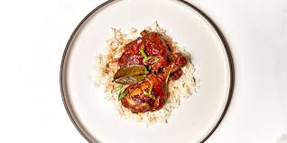

Roscoe Chicken Adobo

Description
This chicken adobo is incredibly easy to make. Chicken simmers in a soy and vinegar sauce with some savory aromatics, and emerges tender and moist.
Ingredients
- 2 tablespoons vegetable oil
- 1 whole chicken, cut into parts
- 4 cloves garlic
- 1 onion, chunked
- 5 leaf bay leaves
- 1/2 cup light brown sugar
- 1 cup low sodium soy sauce
- 1 cup white vinegar
- 2 cups water
- 8 black peppercorns
- steamed rice for serving
Steps
- In a large pot, heat the oil over medium-high heat. Add the chicken, working in batches to avoid overcrowding, and cook until browned on all sides, about 2 minutes per batch. Transfer the chicken to a plate and set aside.
- Add the garlic, onion, bay leaves, sugar, soy sauce, vinegar, and water to the pot. Bring to a boil, then reduce the heat and let simmer for 30 minutes.
- Add the chicken back to the pot and cook for another 30 minutes.
- Remove the chicken and bay leaves, then shred the meat.
- Serve the chicken over steamed rice.
Back to Home